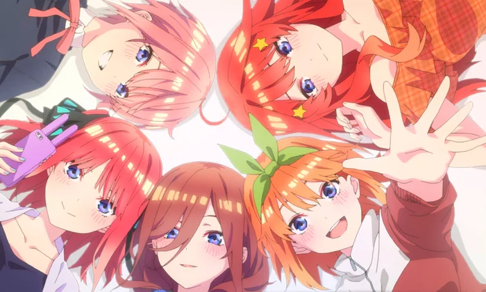

Turn Steps
Turn Steps
Start phase
- Draw 2 cards
- Translate the cards in your hand
Main phase
- Play up to 1 character
- Play up to 2 episodes
- Play as many events as you want
Approach phase
- Attack the Futaro cards with your characters (As many as you want to/can)
- Go back and forth with your opponent to take the lane
End phase
ALL CREDITS TO BUSHIROAD AND NEGI HARUBA
This is a fan made page and is not affiliated with Bushiroad or Negi Haruba in any way.
All rights to the Quintuplets OCG and its characters belong to Bushiroad and Negi Haruba.